サービス別ガイド：設定の保存と、資料を渡すやり方
演習4（桜風町の観光大使チャットボット）で使う「設定（システムプロンプト）を保存しておく機能」と、「資料（知識）を入れて、その資料をもとに答えさせるやり方（RAG）」を、サービスごとにまとめました。2026年9月25日時点の画面と公式ヘルプで確認した内容です。画面や料金は変わりやすいので、最新の情報は各サービスの公式ページで確認してください。
- 名前をつける（例：桜風町の観光大使）
- 指示（＝システムプロンプト）を書く。役割、答えてよいこと・いけないこと、断り方の回答例
- 知識として資料を入れる（例：桜風町の特徴）。ここに入れた資料をもとに答えるのが RAG の考え方です
- 保存したら、次からは呼び出して質問するだけ
指示に「資料に書かれていないことには答えないでください」と書いておくのがコツです。資料にないことを、ありそうな言葉で埋めるのを防げます。
一覧：無料でできること・有料でできること
| サービス | 保存する機能 | 無料版 | 有料版 | 知識（ファイル） | 入口 |
|---|---|---|---|---|---|
| ChatGPT | プロジェクト（おすすめ） | 作れる（ファイルは5件まで） | Plus・Go：25件／Pro・Business・Enterprise：40件 | プロジェクトにファイルを追加 | 左のサイドバー「プロジェクト」の＋ |
| ChatGPT | GPT（廃止予定） | 使えるが、作れない | 公式ヘルプでは作成は Business 以上（Plusでも作成画面は開ける） | 「知識」にファイル20件まで | GPT → 作成 →「構成」 |
| Claude | プロジェクト | 5個まで作れる | 無制限。ファイルが多いと自動で検索方式（RAG）に切り替わり、容量が最大10倍に | 「コンテキスト」にファイル・テキスト・Googleドライブ | 左のサイドバー「プロジェクト」→ 新規プロジェクト |
| Gemini | Gem | 作れる | 作れる（Google AI Plus・Pro・Ultra は一度に読める量が多い） | 「知識」にファイル・Googleドライブ・Gemini Notebook | 左のサイドバー「Gem」→ 新しいGem |
| Gemini Notebook（旧NotebookLM） | 資料だけをもとに答える専用の道具 | 1ノートブックに資料50件まで | Plus 100件／Pro 300件／Ultra 500〜600件 | 「ソース」にファイル・Webサイト・ドライブ・テキスト | notebook.google.com →「新規作成」 |
| Microsoft 365 Copilot（会社のアカウント） | エージェント | Copilot Chat（無償）でも作れる。指示と公開Webサイトを使うエージェントは無償 | 有償ライセンスなら、社内のファイル・メール・Teams を知識にできる（無償の場合は従量課金） | 「ナレッジ」に社内ファイル・Outlook・Teams・Web検索・添付ファイル | 左の欄「エージェント」→ 新しいエージェント →「スキップ」 |
| Copilot（個人向けの無料版） | （エージェント作成は確認できず） | ファイルの添付はできる | — | チャットにファイルを添付 | 演習4は ChatGPT・Gemini・Claude の無料版がおすすめ |
会社で契約しているプラン（ChatGPT Business、Claude Team、Google Workspace、Microsoft 365 など）は、入力した内容が初期設定で学習に使われません。個人向けのプランは、設定で学習をオフにできます（要点まとめの補足）。
ChatGPT
⚠ 「GPT」は廃止が予定されています（後継は「プラグイン」）。公式ヘルプでは、個人プラン（無料・Go・Plus・Pro）では新しく作れず、作れるのは Business 以上とされています（料金表とは食い違いがあり、Plus でも作成画面は開けました）。これから作るなら「プロジェクト」がおすすめです。プロジェクトは無料版でも作れます。
プロジェクトで作る（おすすめ・無料版から）
- 左のサイドバーの「プロジェクト」の横にある「＋」（プロジェクトを新規作成）を押す
- プロジェクト名を入力して「プロジェクトを作成する」
- プロジェクト画面の右上の「…」→「プロジェクト設定」を開く
- 「指示」の欄に設定のプロンプトを貼って「保存する」
- 「情報源」タブ →「ソースを追加」から資料を入れる（アップロード、テキスト入力、Googleドライブなど）。無料版は5件、Plus は25件まで
- プロジェクトの入力欄（「〇〇内の新しいチャット」）から質問する
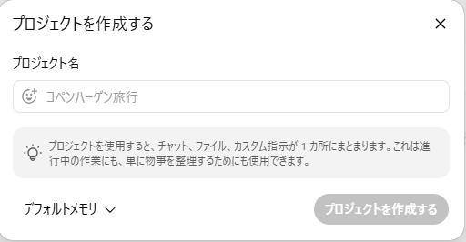
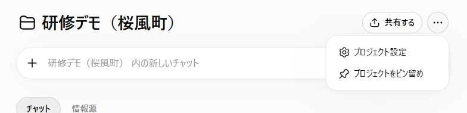
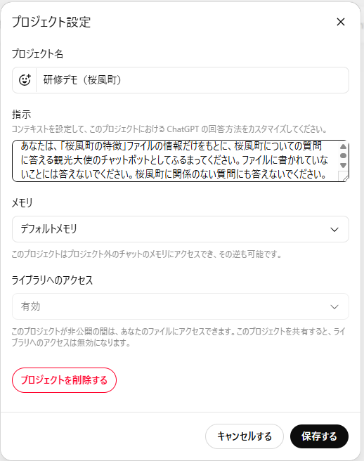
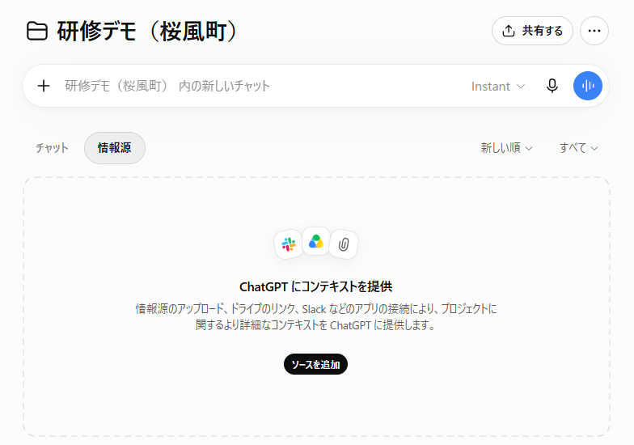
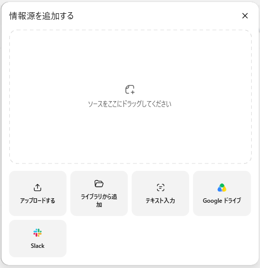
GPT で作る（すでに使っている人向け）
- 「GPT」→「作成」を開き、「構成」タブを選ぶ
- 名前・説明・指示を入力する
- 「知識」の「ファイルをアップロードする」で資料を入れる（20件まで）
- 右上の「作成する」で保存
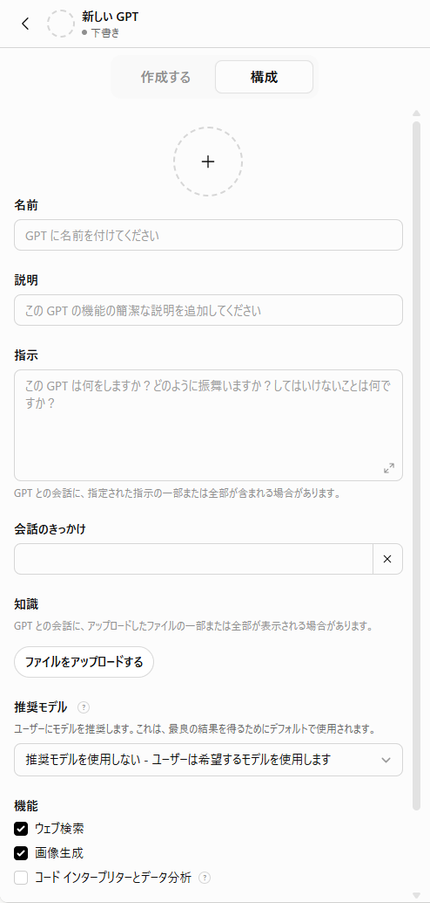
チャットで資料を渡す（保存しない場合）
入力欄の「＋」→「写真やファイルを追加」で、その場で資料を渡せます。無料版は1日3ファイルまでです。
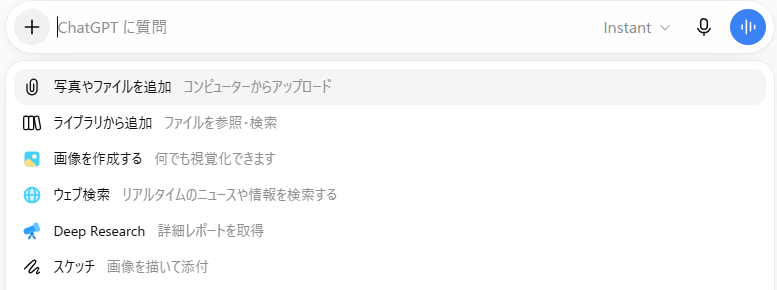
Claude
⚠ 研修の古い案内では「有料アカウントが必要」としていましたが、2026年9月時点では無料版でもプロジェクトを5個まで作れます（有料版は無制限）。
- 左のサイドバーの「プロジェクト」→ 右上の「新規プロジェクト」
- 「何に取り組んでいますか？」に名前を入れて「プロジェクトを作成」
- プロジェクト画面の「指示」の鉛筆マークから、設定のプロンプトを書いて「指示を保存」
- 「コンテキスト」の「＋」から資料を追加する（ファイル、テキスト、Googleドライブなど）
- 上の入力欄から質問する
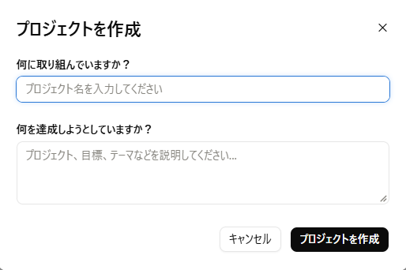
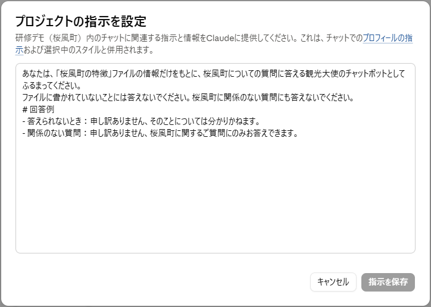
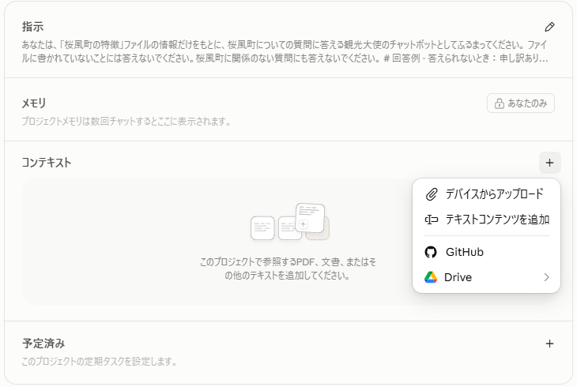
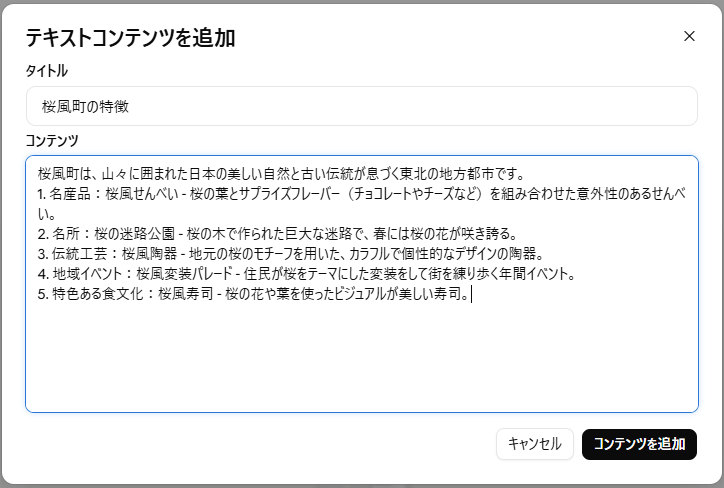
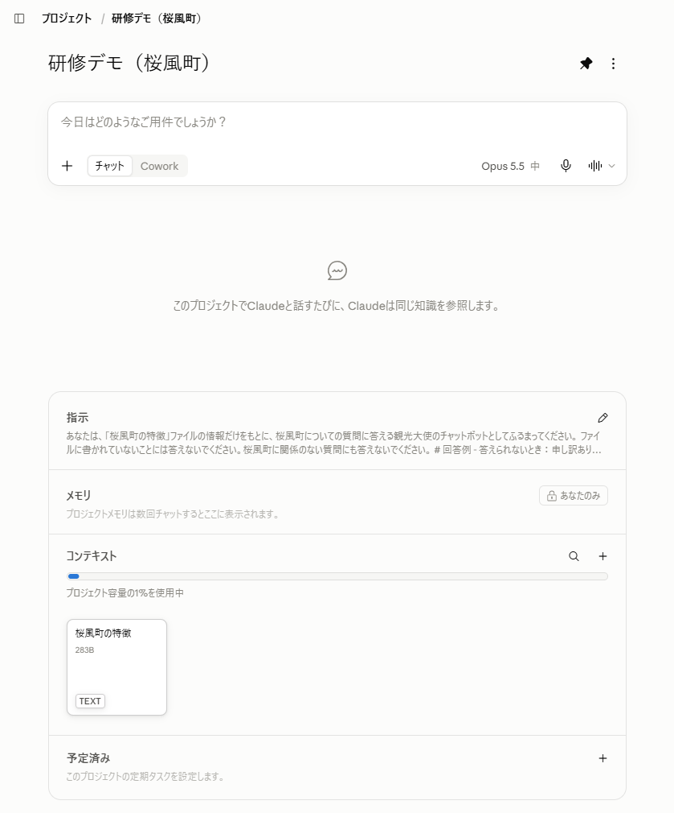
Gemini（Gem）
⚠ 研修の古い案内では「設定（歯車）→ Gem」としていましたが、いまは左のサイドバーの「Gem」から作ります。無料版でも作れます。
- 左のサイドバーを開いて「Gem」→「新しいGem」
- 名前・説明・カスタム指示（設定のプロンプト）を入力する
- 「知識」の「＋」から資料を追加する（ファイル、Googleドライブ、Gemini Notebook など）
- 右の「プレビュー」で試して、「保存」
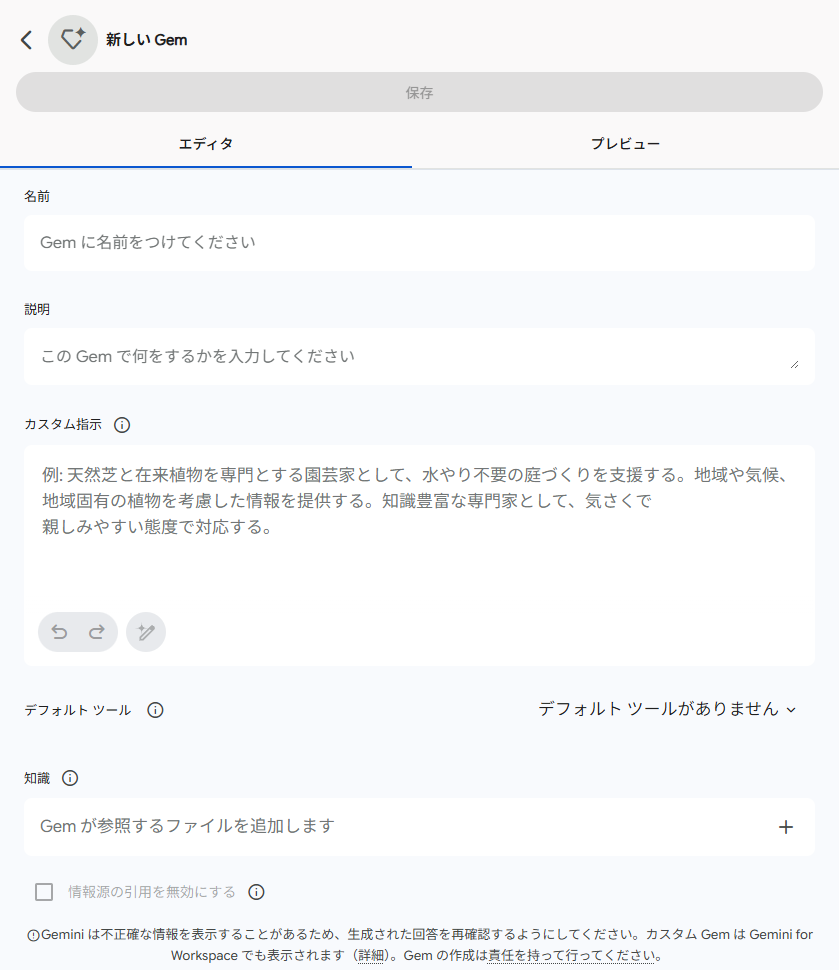
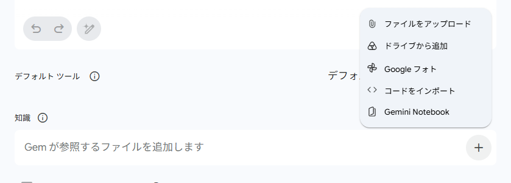
Gemini Notebook（旧NotebookLM）
資料を入れて、その資料だけをもとに答えさせるための道具です。答えには、どの資料のどこを使ったかが番号で付きます。2026年7月に NotebookLM から名前が変わりました。無料版でも1つのノートブックに資料を50件まで入れられます。
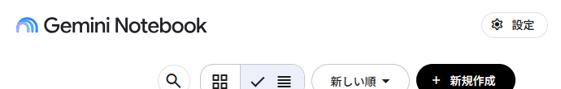
- notebook.google.com を開いて「新規作成」
- 「ソースを追加」から資料を入れる（ファイル、Webサイト、ドライブ、コピーしたテキストなど）
- 「ソース」タブで、使う資料にチェックが入っているか確認する
- 「チャット」タブで質問する
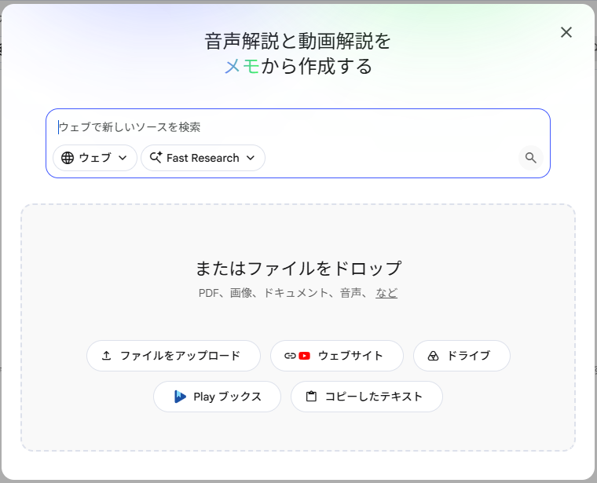
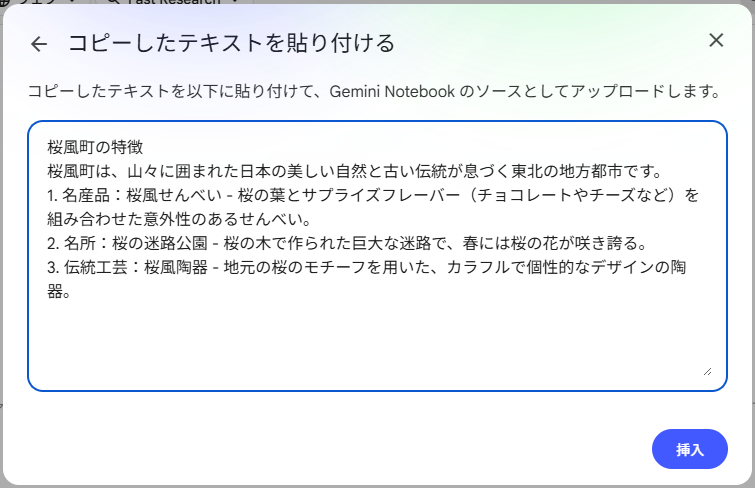
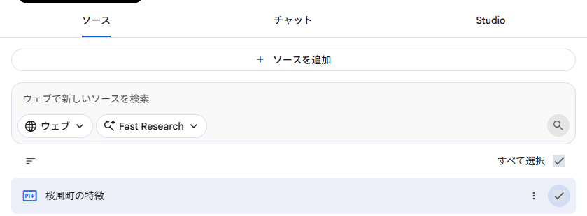
⚠ ソースのチェックが外れていると、資料が入っていても「見つかりません」と答えます。入力欄の右の数字（例：(1)）が、いま使っている資料の数です。
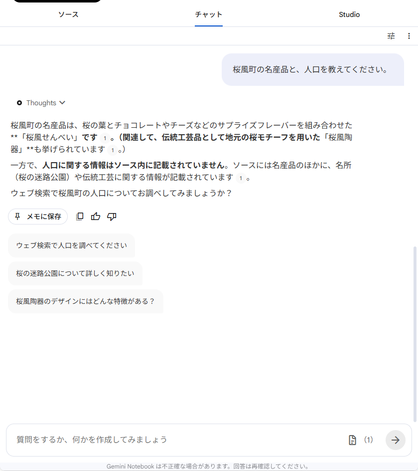
Microsoft 365 Copilot（会社のアカウント）
2026年から名前が「Microsoft Copilot」（無償版は「Microsoft Copilot Chat」）に変わりつつあります。会社の Microsoft 365 アカウントでサインインすると、入力した内容は学習に使われません（画面右上の盾のマークが目印）。
| Copilot Chat（無償） | Microsoft 365 Copilot（有償ライセンス） | |
|---|---|---|
| エージェントを作る | 作れる | 作れる |
| 指示＋公開Webサイトだけのエージェント | 使える | 使える |
| 社内のファイル・メール・Teams を知識にする | 従量課金（会社の管理者の設定が必要） | 使える |
| チャットへのファイル添付 | 使える | 使える |
- 左の欄の「エージェント」→「新しいエージェント」（スマホでは作れません）
- 「自分だけのエージェントを構築する」画面の右上の「スキップ」を押す（会話で作る方法もありますが、スキップすると入力欄に直接書けます）
- 「構成」タブで、名前・説明・指示（設定のプロンプト）を入力する
- 「ナレッジ」で資料を追加する（添付ファイル、クラウドファイル、Web検索など）
- 右上のボタンから作成（保存）する。作ったエージェントは、詳細画面のリンクボタンから同僚に共有できます
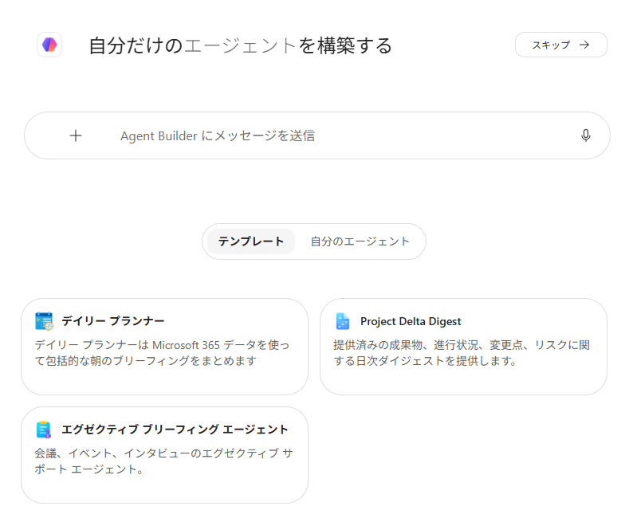
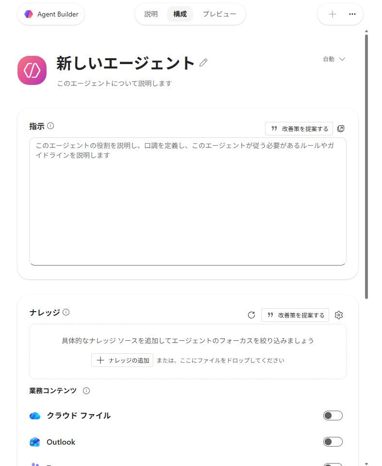
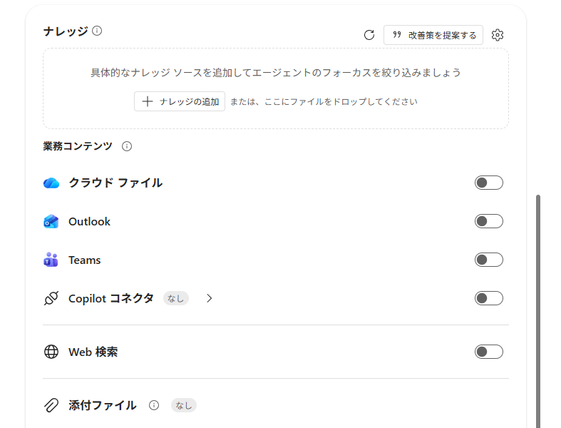
⚠ 社内の資料を知識にするときは、誰に共有するかを必ず確認してください。エージェントを共有すると、相手はそのエージェントの知識をもとにした答えを見られます。
Copilot（個人向けの無料版）
個人の Microsoft アカウントで使う無料の Copilot（copilot.microsoft.com）には、2026年9月25日時点でエージェントを作る機能は確認できませんでした。チャットへのファイル添付や、OneDrive・Gmail などへの接続はできます。演習4を個人のアカウントで試すなら、ChatGPT・Gemini・Claude の無料版がおすすめです。
なお、個人向けの有料版だった「Copilot Pro」は販売を終了し、「Microsoft 365 Premium」に移りました。
出典（公式ヘルプ）
- ChatGPT：Projects in ChatGPT
- ChatGPT：Creating and editing GPTs
- ChatGPT：File Uploads FAQ
- Claude：What are projects?
- Claude：料金プラン
- Gemini：Gem を作成する
- Gemini：プラン別の上限
- Gemini Notebook：NotebookLM から名称変更
- Gemini Notebook：プラン別の上限
- Microsoft：Agent Builder
- Microsoft：Copilot Chat と有償ライセンスの違い
- Microsoft：エンタープライズデータ保護
- Microsoft：Copilot Pro について